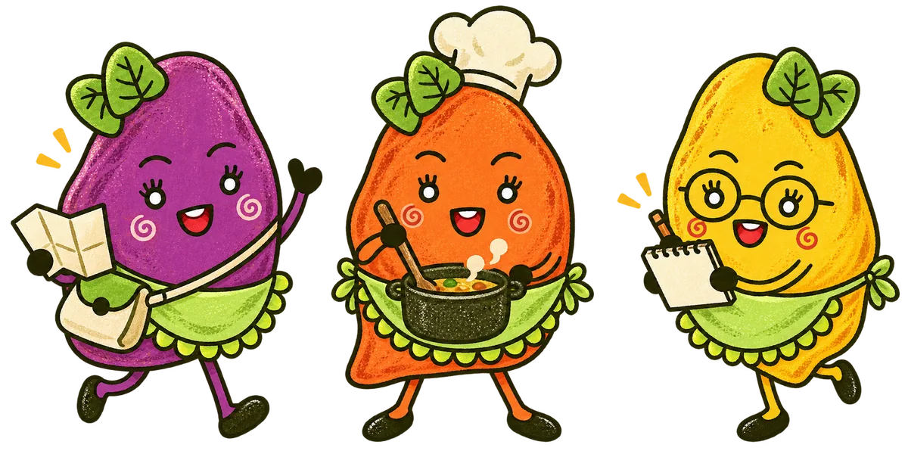
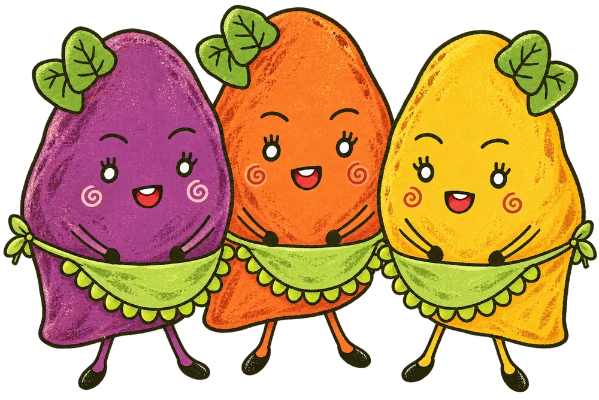

金山的地瓜，為什麼甜？
從砂質土壤到海風，找尋一口好滋味的起點。
SMALL CROP, BIG STORIES
金山的故事，不只在山海之間，也在腳下的砂質土裡。我們從教室走向田間，用訪問、觀察與親手體驗，記下地瓜與這座小鎮的日常。
我們為什麼出發THE JINSHAN EDIT
EXPLORE THE JOURNAL
PICK YOUR OWN CHAPTER
跟紫藷走田野、跟橘藷找滋味，
或和黃藷一起翻開採訪筆記。

這個主題還沒找到章節，換個詞試試，或切換到「全部章節」。
MEET OUR LITTLE FRIENDS
以美工組同學筆下的紫、橘、黃三個地瓜夥伴為原型，重新繪成絹印風插畫。熟悉的葉飾、笑臉與綠色圍裙，陪我們繼續走過田野、老街與餐桌。

有些故事，
要走進土地才聽得見。